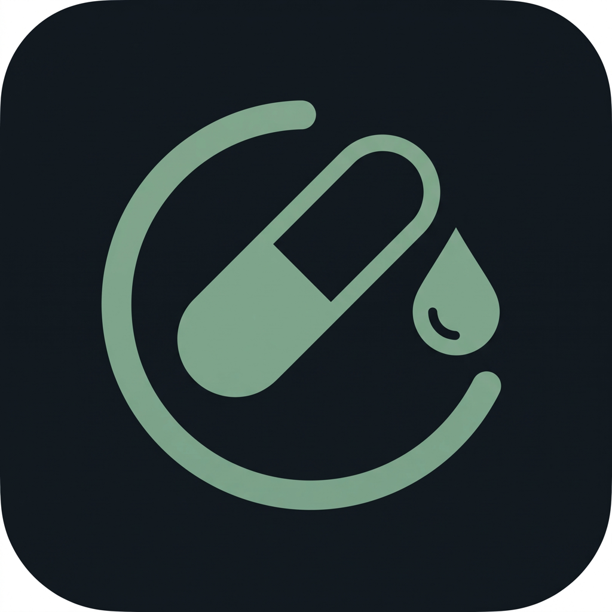

جرعة عرض المشروع«جرعة» تطبيق عربي للتذكير بالأدوية والمواعيد الطبية، يقرأ رسائل «موعدي» و«وصفتي» تلقائياً، ويربط كل من يحتاج متابعة، كبيراً كان أو صغيراً أو مريض زهايمر، بمن يرعاه عبر وضع الرعاية.
النموذج يعمل في المتصفح دون تثبيت. البيانات وهمية ولا تُحفظ. متوفر فعلياً على iOS وأندرويد وApple Watch.
المرضى المزمنون وكبار السن يفوّتون الجرعات، وأهلهم لا يعرفون إلا بعد المضاعفات.
نسبة الالتزام بالأدوية المزمنة لا تتجاوز ٥٠٪ عالمياً، وتنخفض أكثر مع تعدد الأدوية وتقدم العمر.
التطبيقات الحالية مترجمة، لا تقرأ رسائل المواعيد الرسمية، ولا تدعم الاتجاه العربي أو التقويم الهجري.
أم تعيش مع الزهايمر، أب مسنّ في مدينة أخرى، أو طفل يأخذ دواءً مزمناً: لا طريقة لمعرفة أن الجرعة أُخذت أو أنه خرج من البيت.
تطبيق واحد يربط ثلاثة أطراف: المريض، وأهله، وبياناته الصحية من الساعة والمستشفى.
كبار السن، الأطفال، مرضى الزهايمر، وكل مريض يحتاج أحداً يطمئن عليه. المريض يرى واجهة مبسّطة مكبّرة بزر واحد وصوت قريبه بدل الرنة، ومن يرعاه يرى الجرعات والموقع والحالة اليومية لحظياً، وتصله التنبيهات عند التأخر أو الخروج من النطاق الآمن. يُفعّل بنقرة ويعمل مع أي مريض.
جدولة الأدوية مع تنبيه منطوق، تأجيل بلمسة، خصم تلقائي من المخزون، وتذكير بإعادة التعبئة.
الرسالة الرسمية تتحول تلقائياً إلى موعد في التقويم أو دواء في الجدول، على الجهاز دون رفع للسحابة.
دعوة الأقارب برمز QR، صلاحيات محددة، سجل لحظي للجرعات، وتنبيه فوري عند التأخر.
طوق أخضر حول المنزل وطوق أحمر للطوارئ. الخروج برفقة قريب لا يُطلق إنذاراً، والخروج وحده ينبّه الأهل بالموقع والبطارية.
النبض والأكسجين وتخطيط القلب والنوم من Apple Watch وHealth Connect، وتطبيق مستقل على الساعة.
يكتشف أنماط التأخر ونقص المخزون ويقترح تعديلات، ويكيّف الواجهة تلقائياً لكبار السن.
يدوياً بمنتقي شكل الحبة، أو من رسالة وصفتي، أو من كتالوج الأدوية الذكي.
على الهاتف والساعة، منطوقاً بالعربية، مع زر «تم» وزر «تأجيل».
سجل رعاية لحظي، وتنبيه إن تأخرت الجرعة أو خرج المريض من النطاق الآمن.
يقترح تعديل الأوقات، يذكّر بالتعبئة، ويرفع تقريراً للطبيب في المراجعة.
هذا ليس عرضاً لفكرة. هذه الأدوات مفعّلة الآن على iOS وأندرويد وApple Watch بقاعدة بيانات واحدة.
تسعة وكلاء يعملون على الجهاز، لكل واحد دور محدد وقواعد لا يتجاوزها. لا يشخّص أيٌّ منهم ولا يغيّر جرعة دون موافقة.
يستمع لكلام المريض العفوي، يفهم نبرته وشكواه، يجيبه بصوت دافئ، ويبلغ العائلة بملخص مع التسجيل. يربط العرض بدواء أُخذ خلال الساعات الست الماضية، ويبلّغ فوراً بالموقع عند عرض عاجل.
ينبّه الأقرب جغرافياً أولاً عند تأخر الجرعة، يسأل «من يرافقه للموعد؟» ويغلق البطاقة عند أول رد، يرسل نشرة مسائية، يوثّق من أعطى الدواء، ويدير لوحة مقدم الرعاية وأزرار الاستغاثة.
تدرج ثلاثي: تمهيد قبل ١٥ دقيقة، التنبيه بصوت القريب في الموعد، ثم تنبيه مقدم الرعاية بعد ٣٠ دقيقة بلا تأكيد. يذكّر بالموعد قبل يوم و١٢ ساعة وساعتين، ويكشف الوصول للمستشفى تلقائياً.
يميّز الخروج برفقة قريب عن الخروج وحده، ويقدّر الحركة والبطارية. الحذر مراقبة صامتة، والطوارئ فقط تُنبّه بصوت مع شاشة «طريقي إلى البيت» بصوت القريب.
يقود إضافة الدواء بخمس خطوات، يربط كل جرعة بوجبة أو بالنوم مع سبب مفهوم، يباعد المضادات الحيوية، يكشف الدواء المكرر والتعارض الحرج ويجمّد الجدول حتى مراجعة الطبيب.
يحوّل الاسم التجاري كما على العبوة إلى مادة فعالة وفئة. الكتالوج المحلي أولاً دون اتصال، ثم نموذج الجهاز، ثم قاعدة RxNorm. لا يتعلّم دواءً جديداً إلا بقبول المستخدم.
يحلل سلوك المريض مع الدواء على مدى أسابيع: الدواء الذي يُؤخذ متأخراً دائماً، وفترة اليوم الأكثر تفويتاً. يقترح إزاحة الجرعة أو توسيع النطاق، ولا يطبّق شيئاً دون موافقة.
يحوّل ما سجّلته العائلة والمريض خلال الشهور إلى تقرير من صفحة واحدة: الالتزام لكل دواء، الأعراض بعد الجرعات، القياسات وبيانات الساعة. عربي وإنجليزي وPDF قبل الموعد بيوم.
يوزّع التذكيرات على ساعات اليقظة بنصيحة توعوية، لا يزيد على سبعة في اليوم ولا يرسل أثناء النوم. الالتزام الضعيف يُحال إلى مساعد الأنماط.
iOS وأندرويد والساعة، وضع الرعاية، شركاء الرعاية، النطاق الآمن، قراءة الرسائل، الصحة، المساعد الذكي، البطاقة الطبية، التقييمات.
إطلاق تجريبي مع ٢٠٠ عائلة، الاشتراك العائلي، تقرير الطبيب PDF، تحسين كتالوج الأدوية السعودي.
تكامل مباشر مع منصات وزارة الصحة، نسخة دور الرعاية، توصيل الأدوية عبر شركاء الصيدليات.
التمويل سيُوجَّه إلى الإطلاق التجريبي، فريق الدعم، والتراخيص الصحية.